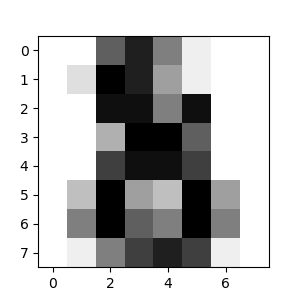

Machine learning: the problem settingTraining set and testing setLoading an example datasetLoading from external datasetsLearning and predictingConventionsType castingRefitting and updating parametersMulticlass vs. multilabel fittingNew Features in scikit-learn 1.5-1.7Enhanced Array API SupportImproved Sparse Data HandlingEnhanced Model VisualizationAdvanced Gradient Boosting FeaturesEnhanced ROC Curve Visualization
In this tutorial, we introduce the machine learning vocabulary that we use throughout scikit-learn and give a simple learning example.
To run the code in this tutorial, you must first install scikit-learn and all of its required dependencies. Please refer to the installation instructions page for more information and for system-specific instructions.
In general, a learning problem considers a set of n samples of data and then tries to predict properties of unknown data. If each sample is more than a single number and, for instance, a multi-dimensional entry (aka multivariate data), it is said to have several attributes or features.
Learning problems fall into a few categories:
supervised learning, in which the data comes with additional attributes that we want to predict (Click here to go to the scikit-learn supervised learning page).This problem can be either:
classification: samples belong to two or more classes and we want to learn from already labeled data how to predict the class of unlabeled data. An example of a classification problem would be handwritten digit recognition, in which the aim is to assign each input vector to one of a finite number of discrete categories. Another way to think of classification is as a discrete (as opposed to continuous) form of supervised learning where one has a limited number of categories and for each of the n samples provided, one is to try to label them with the correct category or class.
regression: if the desired output consists of one or more continuous variables, then the task is called regression. An example of a regression problem would be the prediction of the length of a salmon as a function of its age and weight.
unsupervised learning, in which the training data consists of a set of input vectors x without any corresponding target values. The goal in such problems may be to discover groups of similar examples within the data, where it is called clustering, or to determine the distribution of data within the input space, known as density estimation, or to project the data from a high-dimensional space down to two or three dimensions for the purpose of visualization (Click here to go to the Scikit-Learn unsupervised learning page).
Machine learning is about learning some properties of a data set and then testing those properties against another data set. A common practice in machine learning is to evaluate an algorithm by splitting a data set into two. We call one of those sets the training set, on which we learn some properties; we call the other set the testing set, on which we test the learned properties.
scikit-learn comes with a few standard datasets, for instance the iris and digits datasets for classification and the diabetes dataset for regression.
In the following, we start a Python interpreter from our shell and then load the iris and digits datasets. Our notational convention is that $ denotes the shell prompt while >>> denotes the Python interpreter prompt:
xxxxxxxxxxfrom sklearn import datasetsiris = datasets.load_iris()digits = datasets.load_digits()A dataset is a dictionary-like object that holds all the data and some metadata about the data. This data is stored in the .data member, which is a n_samples, n_features array. In the case of supervised problems, one or more response variables are stored in the .target member. More details on the different datasets can be found in the dedicated section.
For instance, in the case of the digits dataset, digits.data gives access to the features that can be used to classify the digits samples:
xxxxxxxxxxprint(digits.data)Result:
[[ 0. 0. 5. ... 0. 0. 0.] [ 0. 0. 0. ... 10. 0. 0.] [ 0. 0. 0. ... 16. 9. 0.] ... [ 0. 0. 1. ... 6. 0. 0.] [ 0. 0. 2. ... 12. 0. 0.] [ 0. 0. 10. ... 12. 1. 0.]]
The list digits.target holds the labels for the digit dataset, that is the number corresponding to each digit image that we are trying to learn:
xxxxxxxxxxdigits.targetResult: array([0, 1, 2, ..., 8, 9, 8])
Shape of the data arrays
The data is always a 2D array, shape (n_samples, n_features), although the original data may have had a different shape. In the case of the digits, each original sample is an image of shape (8, 8) and can be accessed using:
xxxxxxxxxxdigits.images[0]result: array([[ 0., 0., 5., 13., 9., 1., 0., 0.], [ 0., 0., 13., 15., 10., 15., 5., 0.], [ 0., 3., 15., 2., 0., 11., 8., 0.], [ 0., 4., 12., 0., 0., 8., 8., 0.], [ 0., 5., 8., 0., 0., 9., 8., 0.], [ 0., 4., 11., 0., 1., 12., 7., 0.], [ 0., 2., 14., 5., 10., 12., 0., 0.], [ 0., 0., 6., 13., 10., 0., 0., 0.]])
The simple example on this dataset illustrates how starting from the original problem one can shape the data for consumption in scikit-learn.
To load from an external dataset, please refer to loading external datasets.
In the case of the digits dataset, the task is to predict, given an image, which digit it represents. We are given samples of each of the 10 possible classes (the digits zero through nine) on which we fit an estimator to be able to predict the classes to which unseen samples belong.
In scikit-learn, an estimator for classification is a Python object that implements the methods fit(X, y) and predict(T).
An example of an estimator is the class sklearn.svm.SVC, which implements support vector classification. The estimator’s constructor takes as arguments the model’s parameters.
For now, we will consider the estimator as a black box:
xxxxxxxxxxfrom sklearn import svmclf = svm.SVC(gamma=0.001, C=100.)Choosing the parameters of the model
In this example, we set the value of gamma manually. To find good values for these parameters, we can use tools such as grid search and cross validation.
The clf (for classifier) estimator instance is first fitted to the model; that is, it must learn from the model. This is done by passing our training set to the fit method. For the training set, we’ll use all the images from our dataset, except for the last image, which we’ll reserve for our predicting. We select the training set with the [:-1] Python syntax, which produces a new array that contains all but the last item from digits.data:
xxxxxxxxxxclf.fit(digits.data[:-1], digits.target[:-1])result:
SVC(C=100.0, gamma=0.001)
Now you can predict new values. In this case, you’ll predict using the last image from digits.data. By predicting, you’ll determine the image from the training set that best matches the last image.
xxxxxxxxxxclf.predict(digits.data[-1:])result:
array([8])
The corresponding image is:

As you can see, it is a challenging task: after all, the images are of poor resolution. Do you agree with the classifier?
A complete example of this classification problem is available as an example that you can run and study: Recognizing hand-written digits.
scikit-learn estimators follow certain rules to make their behavior more predictive. These are described in more detail in the Glossary of Common Terms and API Elements.
Where possible, input of type float32 will maintain its data type. Otherwise input will be cast to float64:
xxxxxxxxxximport numpy as npfrom sklearn import kernel_approximationrng = np.random.RandomState(0)X = rng.rand(10, 2000)X = np.array(X, dtype='float32')X.dtyperesult: dtype('float32')
xxxxxxxxxxtransformer = kernel_approximation.RBFSampler()X_new = transformer.fit_transform(X)X_new.dtyperesult:
dtype('float32')
In this example, X is float32, and is unchanged by fit_transform(X).
Using float32-typed training (or testing) data is often more efficient than using the usual float64 dtype: it allows reduced memory usage and sometimes also reduces processing time by leveraging the vector instructions of the CPU. However it can sometimes lead to numerical stability problems causing the algorithm to be more sensitive to the scale of the values and require adequate preprocessing.
Keep in mind however that not all scikit-learn estimators attempt to work in float32 mode. For instance, some transformers will always cast their input to float64 and return float64 transformed values as a result.
Regression targets are cast to float64 and classification targets are maintained:
xxxxxxxxxxfrom sklearn import datasetsfrom sklearn.svm import SVCiris = datasets.load_iris()clf = SVC()clf.fit(iris.data, iris.target)result:
SVC()
xxxxxxxxxxlist(clf.predict(iris.data[:3]))result:
[np.int64(0), np.int64(0), np.int64(0)]
xxxxxxxxxxclf.fit(iris.data, iris.target_names[iris.target])result:
SVC()
xxxxxxxxxxlist(clf.predict(iris.data[:3]))result:
[np.str('setosa'), np.str('setosa'), np.str_('setosa')]
Here, the first predict() returns an integer array, since iris.target (an integer array) was used in fit. The second predict() returns a string array, since iris.target_names was for fitting.
Hyper-parameters of an estimator can be updated after it has been constructed via the set_params() method. Calling fit() more than once will overwrite what was learned by any previous fit():
xxxxxxxxxximport numpy as npfrom sklearn.datasets import load_irisfrom sklearn.svm import SVCX, y = load_iris(return_X_y=True)
clf = SVC()clf.set_params(kernel='linear').fit(X, y)result:
SVC(kernel='linear')
xxxxxxxxxxclf.predict(X[:5])result:
array([0, 0, 0, 0, 0])
xxxxxxxxxxclf.set_params(kernel='rbf').fit(X, y)result:
SVC()
xxxxxxxxxxclf.predict(X[:5])result:
array([0, 0, 0, 0, 0])
Here, the default kernel rbf is first changed to linear via SVC.set_params() after the estimator has been constructed, and changed back to rbf to refit the estimator and to make a second prediction.
When using multiclass classifiers, the learning and prediction task that is performed is dependent on the format of the target data fit upon:
xxxxxxxxxxfrom sklearn.svm import SVCfrom sklearn.multiclass import OneVsRestClassifierfrom sklearn.preprocessing import LabelBinarizer
X = [[1, 2], [2, 4], [4, 5], [3, 2], [3, 1]]y = [0, 0, 1, 1, 2]
classif = OneVsRestClassifier(estimator=SVC(random_state=0))classif.fit(X, y).predict(X)array([0, 0, 1, 1, 2])In the above case, the classifier is fit on a 1d array of multiclass labels and the predict() method therefore provides corresponding multiclass predictions. It is also possible to fit upon a 2d array of binary label indicators:
xxxxxxxxxxy = LabelBinarizer().fit_transform(y)classif.fit(X, y).predict(X)array([[1, 0, 0], [1, 0, 0], [0, 1, 0], [0, 0, 0], [0, 0, 0]])Here, the classifier is fit() on a 2d binary label representation of y, using the LabelBinarizer. In this case predict() returns a 2d array representing the corresponding multilabel predictions.
Note that the fourth and fifth instances returned all zeroes, indicating that they matched none of the three labels fit upon. With multilabel outputs, it is similarly possible for an instance to be assigned multiple labels:
xxxxxxxxxxfrom sklearn.preprocessing import MultiLabelBinarizery = [[0, 1], [0, 2], [1, 3], [0, 2, 3], [2, 4]]y = MultiLabelBinarizer().fit_transform(y)classif.fit(X, y).predict(X)array([[1, 1, 0, 0, 0], [1, 0, 1, 0, 0], [0, 1, 0, 1, 0], [1, 0, 1, 0, 0], [1, 0, 1, 0, 0]])In this case, the classifier is fit upon instances each assigned multiple labels. The MultiLabelBinarizer is used to binarize the 2d array of multilabels to fit upon. As a result, predict() returns a 2d array with multiple predicted labels for each instance.
Since this tutorial was originally written for scikit-learn 1.4, several important features have been added in versions 1.5, 1.6, and 1.7 that enhance the machine learning workflow:
scikit-learn 1.7 now supports Array API-compliant inputs, making it easier to work with data from libraries like PyTorch and CuPy. This means you can now pass tensors and arrays from these libraries directly to many scikit-learn functions without conversion:
xxxxxxxxxximport torchfrom sklearn.metrics import accuracy_scorey_true = torch.tensor([0, 1, 1, 0])y_pred = torch.tensor([0, 1, 0, 0])accuracy_score(y_true, y_pred)0.75scikit-learn now supports both traditional sparse matrices (scipy.sparse.spmatrix) and the newer sparse arrays (scipy.sparse.sparray), providing better compatibility with future SciPy versions:
xxxxxxxxxxfrom scipy.sparse import csr_array # New sparse array formatfrom sklearn.svm import SVCX_sparse = csr_array([[0, 1], [1, 0]])y = [0, 1]clf = SVC()clf.fit(X_sparse, y) # Works seamlessly with sparse arraysIn Jupyter notebooks, estimators now display a more informative HTML representation showing all parameters with non-default values highlighted, and include a copy button for easy configuration:
xxxxxxxxxxfrom sklearn.ensemble import HistGradientBoostingClassifierclf = HistGradientBoostingClassifier(max_iter=100, learning_rate=0.1)clf # In Jupyter, this shows enhanced HTML representationHistGradientBoostingClassifier and HistGradientBoostingRegressor now support explicit validation sets for better early stopping:
xxxxxxxxxxfrom sklearn.ensemble import HistGradientBoostingClassifierfrom sklearn.model_selection import train_test_split
X_train, X_val, y_train, y_val = train_test_split(X, y, test_size=0.2)clf = HistGradientBoostingClassifier(enable_metadata_routing=True)clf.fit(X_train, y_train, X_val=X_val, y_val=y_val)The new from_cv_results() method in RocCurveDisplay allows automatic generation of ROC curves from cross-validation results:
xxxxxxxxxxfrom sklearn.model_selection import cross_validatefrom sklearn.metrics import RocCurveDisplay
cv_results = cross_validate(clf, X, y, cv=5, return_estimator=True)RocCurveDisplay.from_cv_results(cv_results, X, y)These enhancements make scikit-learn 1.7 more powerful and user-friendly while maintaining backward compatibility with code written for earlier versions.
Note: scikit-learn 1.7 supports Python versions 3.10 to 3.13, with experimental support for free-threaded CPython. Version 1.7.2 also adds support for Python 3.14.
This original version of this tutorial was written by scikit-learn developers under the BSD License.
The code examples and text were updated for scikit-learn version 1.7 by Brian Bird using Claude Sonet 4, 10/19/2025